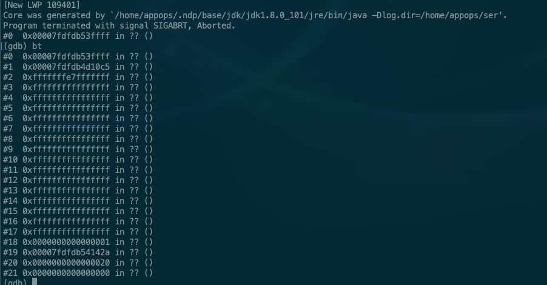

好久没有写东西了，下个月要给智慧企业技术公众号写一篇文章，得抓紧时间找找感觉了，就记录一下最近业务上遇到的两个小问题吧。
httpclient请求偶现异常
业务上请求第三方http服务时，偶尔会出现org.apache.http.NoHttpResponseException: The target server failed to respond异常报警。一开始以为是对方服务的偶尔不可能用，但后来发现对于多个第三方服务都会出现一样的情况，那基本可以断定问题是出在自己这里。（当觉得别人都有问题的时候，要想一下是不是自己有问题。）
首先通过异常堆栈我们可以判断，请求是通过apache的httpclient发起的。
可以从网上查到相关的错误原因：
可以看到产生错误的原因是，服务关闭连接时没有通知客户端，当客户端再次使用该连接时会产生这个错误。打开httpclient的debug日志，我们可以看到，出现错误时最后的日志是end of steam，我们知道一般产生end of stream的原因是TCP连接的服务端主动关闭连接造成。查看http服务端的nginx配置，发现设置了keepAlive 32s，也就是说当连接空闲超过32s时，服务端就会主动发起FIN请求，进入tcp关闭的四次挥手流程。由于httpclient没有主动关闭连接，导致连接处于半关闭状态，而连接还存在于连接池中，所以当下次再被取出来用时就会收到服务端的RST。
apache httpclient提供了两个办法来解决这个问题，具体源码实现可以在AbstractConnPool.java中看到，这里就不贴了。
- 1、通过
PoolingHttpClientConnectionManager.setValidateAfterInactivity(evictIdle);设置连接空闲多久以后需要进行validate检查 - 2、通过
HttpClientBuilder.evictIdleConnections(evictIdle, TimeUnit.MILLISECONDS)设置连接空闲多久后将被清理出连接池。
因此只要我们配置上这两个参数，保证它小于服务端保持连接的时间就可以了。
jvm进程异常崩溃
最近线上某个服务的进程相继发生崩溃，jvm进程直接崩溃了。通过服务监控平台可以看到，在崩溃的时间点，cpu、内存、磁盘等资源都没有出现异常，只有load彪到了100。找SA排查了宿主机steal等因素，都没有发现可疑的情况。怀疑load飙升不是引起进程崩溃的原因，而是进程崩溃系统生成coredump才引起load飙升。而该服务之前半年都没有发生过崩溃，上个版本的最大的改动是引入了系统ffmpeg的调用。因此首先怀疑是ffmpeg调用引起的，接下来找到系统的崩溃日志hs_err_pid103051.log，该日志的最上方有一个总结性的描述：
可以看到它指出可能的问题是gson的序列化引起的，但是这个gson库已经在其他线上业务使用了几年了，从来没有发生过这样的问题，所以还是有怀疑，继续找到上面描述的core dump文件。
常情况下，coredump（亦称为core文件）文件包含程序运行时的内存信息，含寄存器状态、堆栈指针、内存管理信息、操作系统flags及其他信息，可以理解为把程序工作的当前状态存储成一个文件。Coredump文件通常于程序异常终止（crashed）时自动生成，常用于辅助分析和解决bug，可通过 coredump 文件进行栈回溯和反汇编。
通过gdb对core文件进行backtrace操作，可以看到如下信息：

说明引起崩溃的进程并不是我们怀疑的ffmpeg进程，而是jvm本身引起的，所以看来只能继续从jvm的原因入手，网上找关于gson序列化引起崩溃的例子，很少有提到类似的情况，我们找到上面错误日志里说的导致崩溃的方法源码，从方法中并没有看出有什么会引起jvm崩溃的地方。
最后我们给所有进程都加上了-XX:+HeapDumpOnOutOfMemoryError参数，等再次发生进程崩溃时，我们可以拿到对应的堆栈信息，更精确的定位问题。